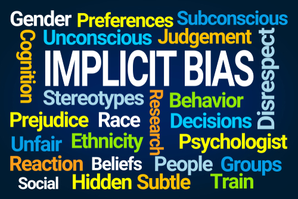
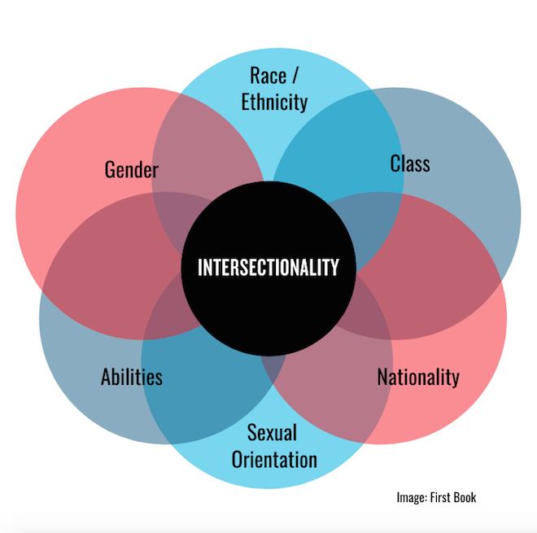

Implicit Bias occurs when we have attitudes or beliefs toward's certain people with associated stereotypes without our conscious knowledge. Often, people don't even realize our minds lean towards a certain way.
By understanding and addressing our implicit biases, we can work harder at a more equitable and inclusive society.
Patricia Hill Collins and Sirma Bilge describe Intersectionality as such:
I think of intersectionality as a pie chart of all of the different parts that make up a person- race, gender, class, and other characteristics that shape who they are. All of these different parts of a person are so important because it is what makes each person unique. You cannot just look at one part of a person; You must use how these parts work together to shape one's life. In the tech world, intersectionality plays a huge role in understanding why certain groups are underrepresented. It is not just because someone may be a woman or a person of color, yet how being a woman or person of color, along with socioeconomic background, can affect someone's experience at work.
Take the Implicit Association Test (IAT) developed by Harvard University to explore your unconscious biases.
